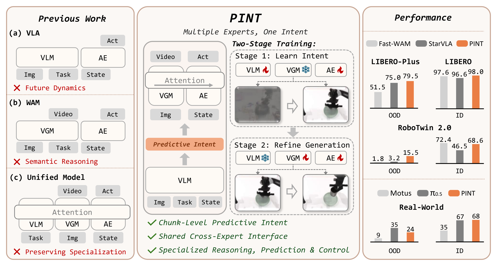
Multiple experts, one intent. PINT coordinates semantic reasoning, world modeling, and action generation through shared chunk-level Predictive Intent while preserving expert-specific pathways.
Abstract
Generalist robot manipulation can benefit from pretrained vision-language models (VLMs) for semantic reasoning and video generation models (VGMs) for world modeling. However, existing unified models that directly fuse them through shared attention at multiple layers can make it harder to draw on their specialized capabilities. We introduce PINT, a unified model that coordinates semantic reasoning, world modeling, and action generation through a shared chunk-level Predictive Intent while preserving expert-specific pathways. PINT inserts learnable Intent Tokens into the VLM sequence to form this representation, conditioning both the VGM and an Action Expert (AE). It replaces only the VGM's prompt conditioning and retains the VGM at inference, where the AE reads its representations through one-way attention. Rather than prescribing what Predictive Intent should encode, PINT learns it jointly from the native prediction objectives of the VLM, VGM, and AE, which provide complementary views of the same upcoming task execution. Training uses two stages: Stage 1 freezes the VGM so that future video prediction shapes Predictive Intent with task-relevant future dynamics, while Stage 2 fixes the learned Intent and adapts the VGM and AE. Without embodied pretraining, PINT achieves strong in-distribution (ID) performance and substantially improves out-of-distribution (OOD) generalization, reaching 15.5% on RoboTwin 2.0-Hard compared with 1.8% for Fast-WAM and 3.2% for StarVLA, and 79.5% on LIBERO-Plus compared with 51.5% and 75.0%, respectively. Across five real-world bimanual tasks, PINT reaches 68% ID and 24% OOD success, compared with 35%/9% for pretrained Motus and 67%/35% for pretrained π0.5.
Method Overview
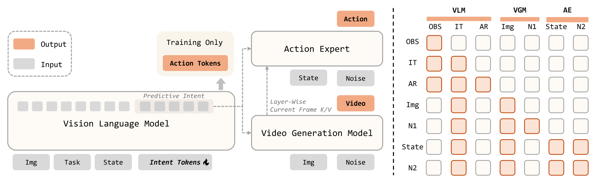
PINT architecture and attention design. Learnable Intent Tokens form Predictive Intent, which conditions both the VGM and AE. The AE receives layer-wise current-frame keys and values from the VGM. The autoregressive action-token suffix is used only during training.
Future Video Prediction
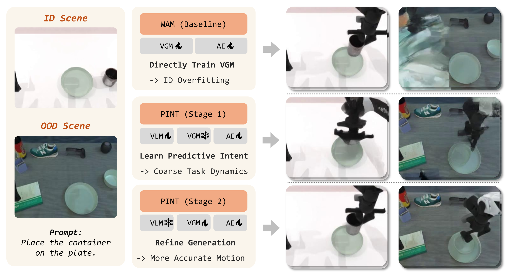
Future prediction across training stages. Predictions from the VGM trained in Fast-WAM and PINT after Stage 1 and Stage 2 use the same ID and OOD inputs. Stage 1 learns Predictive Intent with the VGM frozen; Stage 2 adapts the VGM to refine generation.
More Future Video Predictions
Closed-Loop Predictions
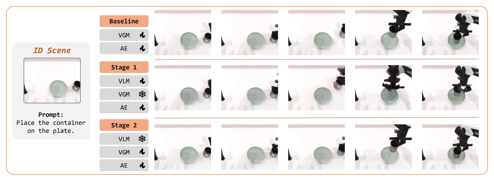
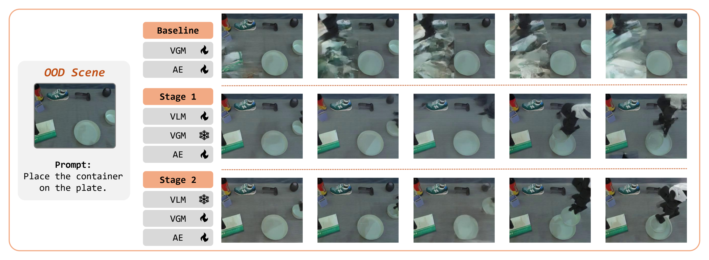
Expanded closed-loop examples for placing a container on a plate. Rows compare the VGM from our Fast-WAM reproduction with PINT after Stage 1 and Stage 2.
Open-Loop Predictions
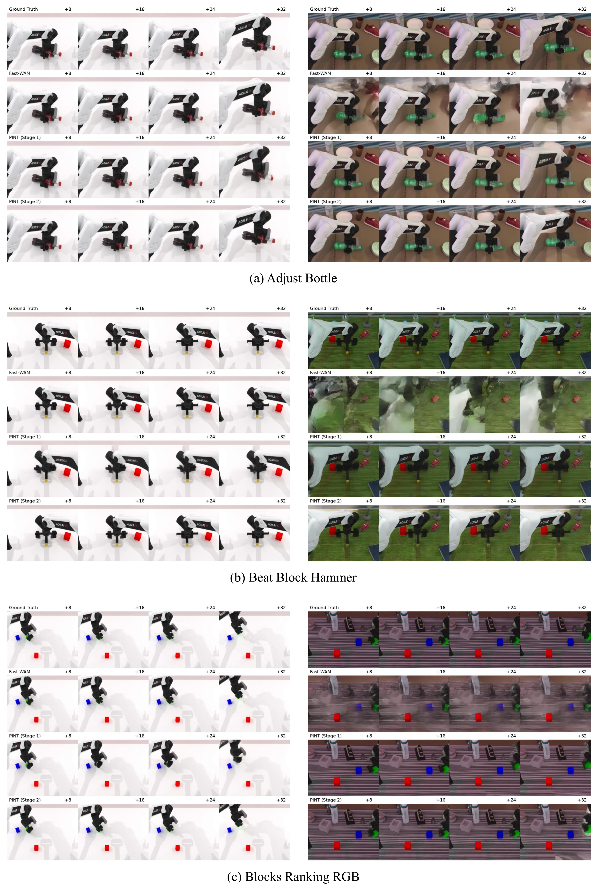
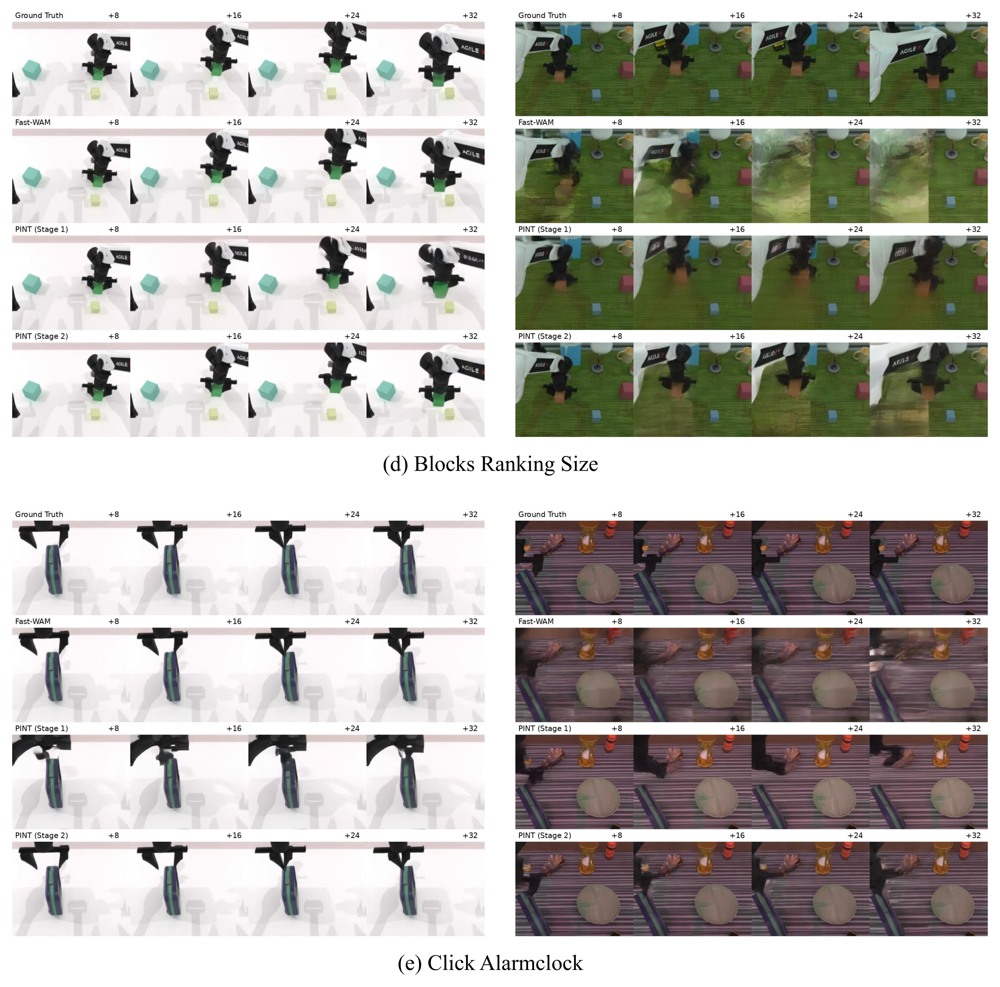
Open-loop future-video predictions on RoboTwin 2.0 demonstrations. Left and right panels show ID and OOD examples. Rows show ground truth, the VGM trained in Fast-WAM, PINT after Stage 1, and PINT after Stage 2. Columns show the main-camera view at t+8, t+16, t+24, and t+32.
Experimental Overview
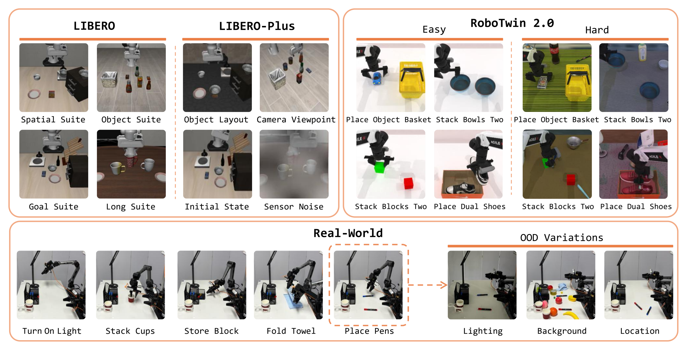
We evaluate PINT on LIBERO, LIBERO-Plus, RoboTwin 2.0, and five real-world bimanual tasks under ID and OOD settings.
Real-World Evaluation Videos
Representative successful PINT executions under in-distribution (ID) and out-of-distribution (OOD) settings.
Turn On Light
Stack Cups
Place Pens
Store Block
Fold Towel
Simulation Results
LIBERO and LIBERO-Plus
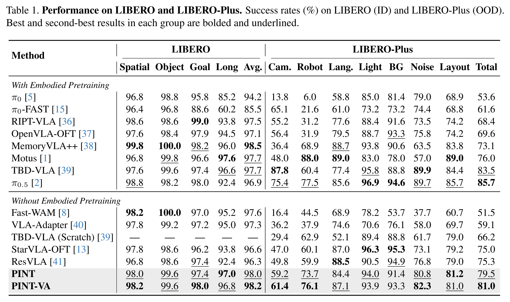
RoboTwin 2.0
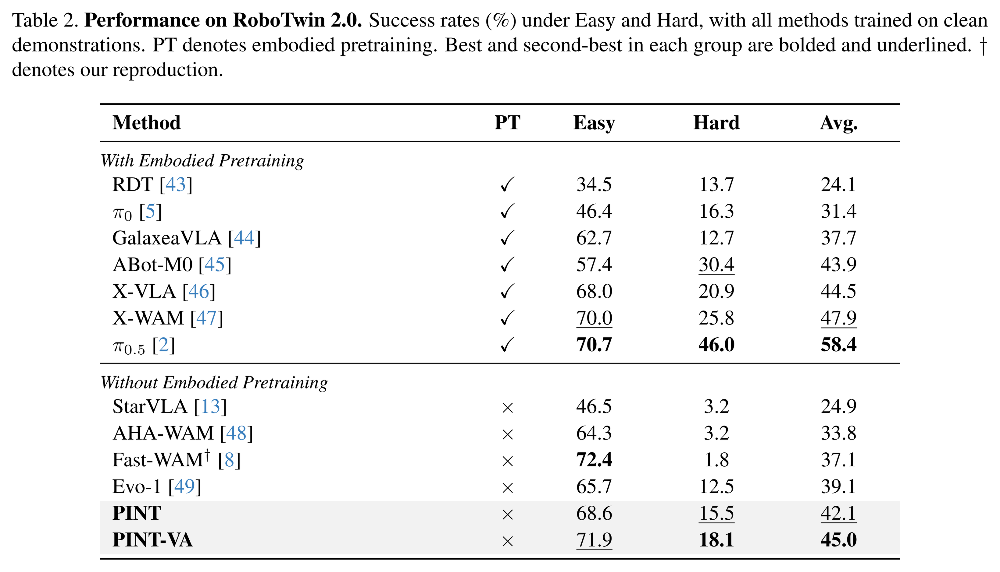
Real-World Results
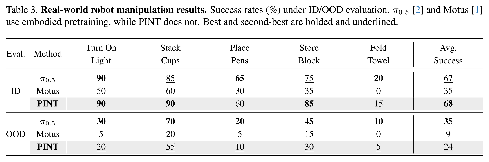
Ablation Study
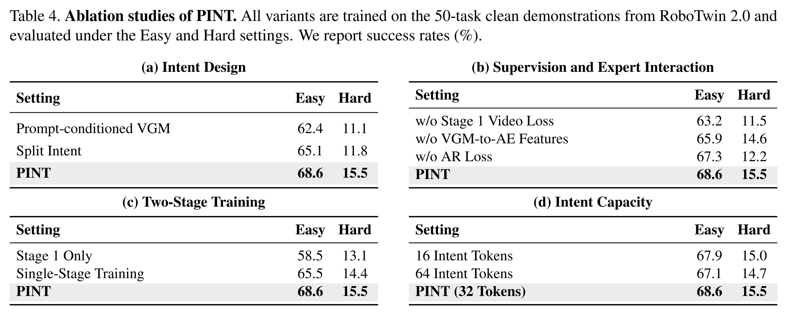
Visualizing Predictive Intent
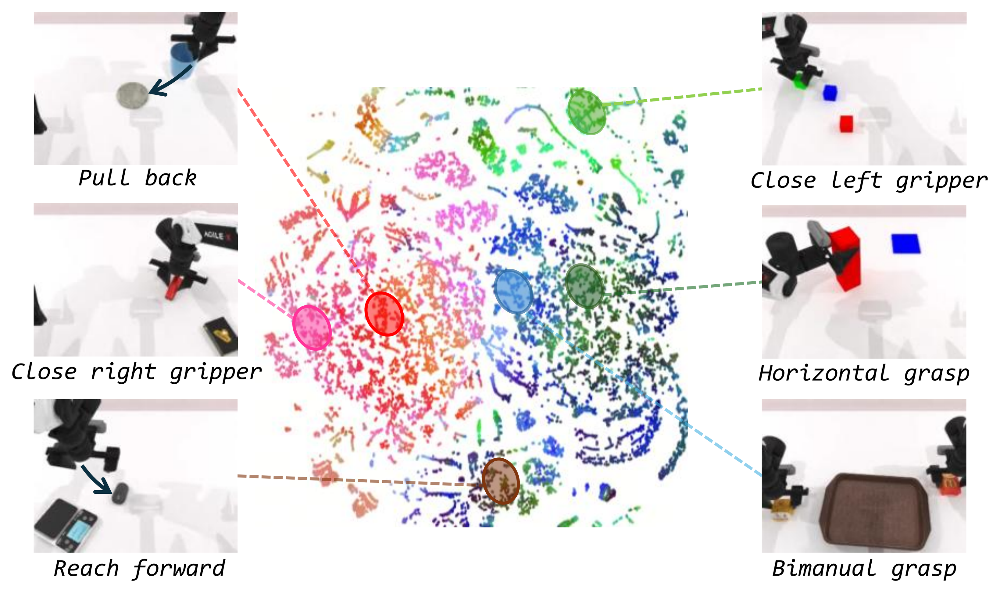
Ground-truth action chunks are projected into a two-dimensional t-SNE space. Each point is colored using a three-dimensional PCA projection of its corresponding Predictive Intent. Highlighted regions show representative manipulation behaviors.
BibTeX